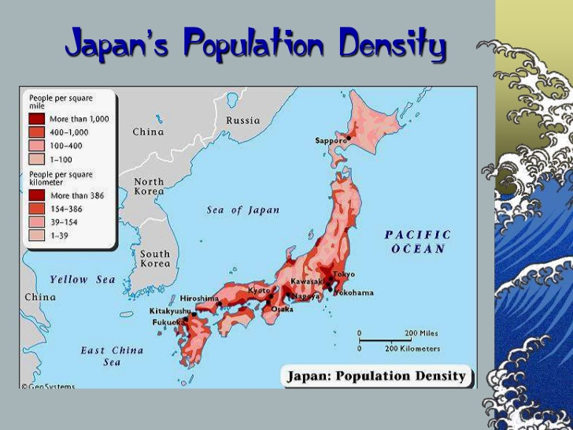

Location
Japan has a total of 6.852 islands alongside East Asia in the Pacific ocean. The main islands from north to south are Hokkaido, Honshu, Shikoku and Kyushu. According to the CIA Factbook, 73% of Japan's landmass is forested, mountainous, and unsuitable for agricultural, industrial, or residential use. This has led to a country with a high density population. The current density per kilometre is, according to the Statistics Bureau of Japan, 335 individuals. With a population of almost 127 million individuals, that makes it the third most densely populated country after Bangladesh and India.
Politics
Shinzo Abe is the current Prime Minister of Japan. He assumed office on the 26th of December 2012